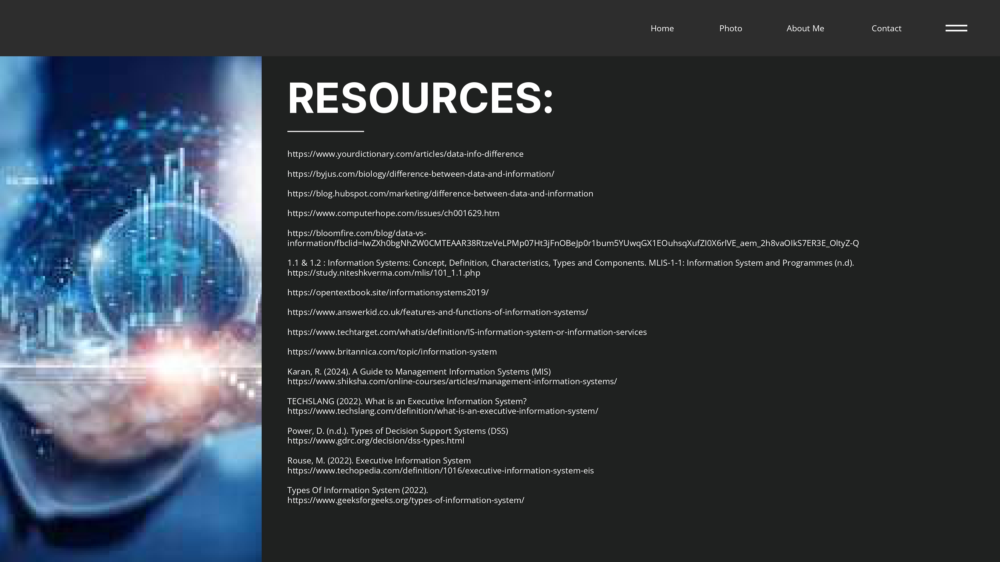

The language of numbers, like any language, has its own alphabet"
Method of writing numerals to represent values
Different types of number systems;
decimal, binary, octal and hexadecimal.
Each with its own base
Portfolio
01
5 COMPUTING DISCIPLINE AND MAJORS
Portfolio
02
DATA, INFORMATION, AND INFORMATION SYSTEMS

Portfolio
03
NUMBER SYSTEMS
TAKE NOTE:
Portfolio
04
COMPUTER HARDWARE & SOFTWARE
Components of Computer Hardware
Input Devices
Keyboard: Used to input text and
commands.
Mouse: Used to control the cursor on the
screen and interact with objects.
Scanner: Converts physical documents
into digital images.
Microphone: Captures audio input for
voice commands or recordings.
Joystick/Gamepad: Used for gaming and
other interactive applications.
Output Devices
Monitor: Displays visual information.
Printer: Produces physical copies of
documents.
Speakers/Headphones: Output
audio.
Projector: Displays images on a
large screen.

Storage Devices
Hard Disk Drive (HDD): Stores data magnetically.
Solid-State Drive (SSD): Stores data electronically,
offering faster performance.
USB Flash Drive: Portable storage device.
External Hard Drive: A larger, external storage
device
Processing Devices
Central Processing Unit (CPU): The "brain" of the computer,
responsible for executing instructions.
Graphics Processing Unit (GPU): Handles graphics and video
processing.
Internal Components
Motherboard: The main circuit board that
connects all components.
Power Supply Unit (PSU): Provides power
to the system.
RAM (Random Access Memory):
Temporary storage for data and
programs
Types of Software
System Software
Application Software.
Their Implementation in the Different Institutions in the Community
Educational Institutions
The implementation of computer hardware and software facilitates
personalized learning experiences, enables access to a wealth of online
resources, and improves administrative efficiency.
Healthcare Institutions
The integration of digital technology in healthcare improves patient
care and outcomes, streamlines administrative processes, and
enhances communication and collaboration among healthcare
providers.
Government Institutions
The use of ICT in government institutions increases transparency and
accountability, improves public service delivery, and facilitates data
driven decision-making.
Business and Industry
The application of computer systems in business and industry boosts
productivity and efficiency, enhances customer service and
satisfaction, and improves decision-making through data analysis.
Community Centers and Libraries
The use of digital technology in community centers and libraries
enhances educational and social opportunities by providing access to
computers, internet, and digital resources.
Portfolio
05
TYPES OF MOTHERBOARD
What is a Motherboard?
A computer's motherboard is a circuit board that houses electrical parts and facilitates communication between them (BasuMallick, 2024).
It is also called the backbone of a computer.
It has several components on a single platform
A computer's motherboard is a circuit board that houses electrical parts and facilitates communication between them (BasuMallick, 2024).
It is also called the backbone of a computer.
It has several components on a single platform
Functions of a Motherboard
-Physical Connection: Provides slots and sockets for installing the CPU, RAM, and expansion cards (like graphics cards, sound cards, network cards, etc.).
-Power Distribution: Regulates and distributes electrical power to all components through various power connectors.
-Data Transfer: Facilitates communication between the CPU, RAM, and other components using a system of buses and circuits.
-Physical Connection: Provides slots and sockets for installing the CPU, RAM, and expansion cards (like graphics cards, sound cards, network cards, etc.).
-Power Distribution: Regulates and distributes electrical power to all components through various power connectors.
-Data Transfer: Facilitates communication between the CPU, RAM, and other components using a system of buses and circuits.
Functions of a Motherboard
- System Integration: Coordinates the operation of all connected components, ensuring they work together seamlessly
- Manages data flow: The BIOS ensures that the operating system interacts well with input and output devices. Ensuring that the data sent to the computer moves as expected to perform its intended purpose (BasuMallik, 2024).
-Enhances performance Boosts the capabilities of a computer. Motherboards often transform the capabilities of a computer. (BasuMallik, 2024)
- System Integration: Coordinates the operation of all connected components, ensuring they work together seamlessly
- Manages data flow: The BIOS ensures that the operating system interacts well with input and output devices. Ensuring that the data sent to the computer moves as expected to perform its intended purpose (BasuMallik, 2024).
-Enhances performance Boosts the capabilities of a computer. Motherboards often transform the capabilities of a computer. (BasuMallik, 2024)
AT Motherboard
AT motherboards, popular in the 1980s, were a specific size and shape, using ISA expansion slots and a large power connector, and were primarily used in desktop computers of that era.
AT motherboards, popular in the 1980s, were a specific size and shape, using ISA expansion slots and a large power connector, and were primarily used in desktop computers of that era.
ATX Motherboard
ATX motherboards, introduced in 1995, improved upon AT motherboards with better power management, more expansion slots, and built-in USB support, making themmore efficient and user-friendly for modern computers
ATX motherboards, introduced in 1995, improved upon AT motherboards with better power management, more expansion slots, and built-in USB support, making themmore efficient and user-friendly for modern computers
BTX Motherboard
BTX is a motherboard form factor designed to improve airflow and cooling efficiency compared to ATX, using advanced technologies like SATA, USB 2.0, and PCI Express
BTX is a motherboard form factor designed to improve airflow and cooling efficiency compared to ATX, using advanced technologies like SATA, USB 2.0, and PCI Express
Extended ATX Motherboard
Extended ATX motherboards are the largest ATX variant, designed for powerful PC systems with ample space and features, enabling better cooling, overclocking, and expansion capabilities.
Extended ATX motherboards are the largest ATX variant, designed for powerful PC systems with ample space and features, enabling better cooling, overclocking, and expansion capabilities.
LPX Motherboard
LPX is a smaller motherboard form factor used in the late 1980s and 1990s, featuring a different layout and requiring a riser card for expansion.
LPX is a smaller motherboard form factor used in the late 1980s and 1990s, featuring a different layout and requiring a riser card for expansion.
Micro-ATX Motherboard
Build AT motherboards, popular in the 1980s, were a specific size and shape, using ISA expansion slots and a large power connector, and were primarily used in desktop computers of that era
Build AT motherboards, popular in the 1980s, were a specific size and shape, using ISA expansion slots and a large power connector, and were primarily used in desktop computers of that era
Mini ITX Motherboard
The Mini-ITX is a compact motherboard designed for small form factor PCs, prioritizing energy efficiency over maximum expandability
The Mini-ITX is a compact motherboard designed for small form factor PCs, prioritizing energy efficiency over maximum expandability
Mini ATX Motherboard
Mini-ATX motherboards are a middle ground between ATX and micro-ATX, offering a balance of size and expandability, suitable for smaller cases
Mini-ATX motherboards are a middle ground between ATX and micro-ATX, offering a balance of size and expandability, suitable for smaller cases
Pico BTX Motherboard
Pico BTX motherboards are small form factor motherboards with limited expansion slots, suitable for digital applications with modest hardware requirements
Pico BTX motherboards are small form factor motherboards with limited expansion slots, suitable for digital applications with modest hardware requirements
Standard ATX Motherboard
ATX is a more compact and standardized version of the AT motherboard, introduced by Intel in the 1990s. It offers improved component interchangeability and advanced connection technologies
ATX is a more compact and standardized version of the AT motherboard, introduced by Intel in the 1990s. It offers improved component interchangeability and advanced connection technologies
For more information please refer to the learning materials :)
Portfolio
06
TYPES OF COMPUTERS
| Classification of Computers | Classification of Digital Computer |
|---|---|
Supercomputer
Mainframe Computers
Mini Computers

Server
Workstations

Micro Computers
| Type of Computer | Processing Speed | Memory Capacity | Power Consumption | Usage | |
|---|---|---|---|---|---|
| MINI COMPUTER | Relatively slow processing power, ideal for managing devices, measuring data, and transmitting information. | Initially used magnetic cores to store a limited amount of information; later adopted more efficient semiconductor memory. | Requires less power and cooling compared to mainframe computers. | Versatile machines suitable for entertainment, gaming, running small business operations, and working on the go | |
| MICRO COMPUTER | The speed can differ significantly; newer models are much faster than older ones. | Early models had limited memory capacity; contemporary systems offer significantly more memory and versatile storage solutions. | Typically consumes less energy, but the specific power usage depends on the model and workload. | Well-suited for handling data, creating visuals, communicating, managing finances, and general personal and work-related activities. | |
| WORKSTATION | owerful computing capabilities for complex tasks such as creating 3D images, modifying videos, and running scientific experiments. | Substantial memory capacity (exceeding 64GB) designed to handle complex and resource intensive operations. | Consumes a significant amount of energy and necessitates robust cooling systems. | Capable of running complex software and advanced tools for design, graphics, and research purposes. | |
| SERVER | Efficient processing of large amounts of data, prioritizing accuracy and dependability over sheer processing power. | Significant amount of high speed memory (over 64GB) for rapid data access and processing. | Energy consumption depends on the computer's size and the tasks it performs. Modern hardware designs prioritize energy efficiency. | Provides centralized data storage, communication services, cloud based computing, and virtualized environments for organizations. |